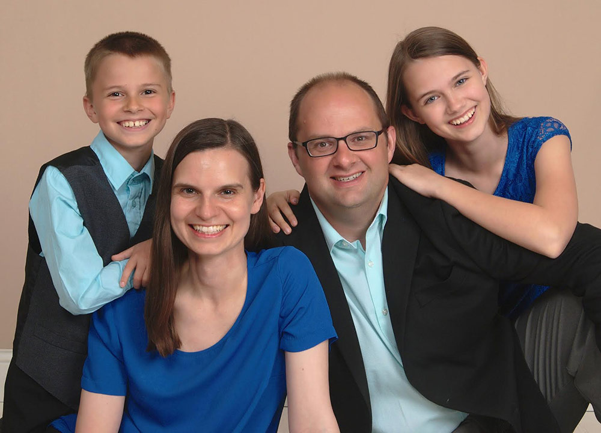

Brockport United Methodist Church
Sunday Worship:
Children's Sunday School:
9:30a.m.
9:45a.m - 10:30a.m.
92 Main Street
Brockport, NY 14420
We are a place of worship and fellowship where we are planting seeds of God's love, nourishing growth, and feeding our neighbors in all places.
Our Pastor

Originally from Indiana, our Pastor, Eric Helms, attended Seminary at Duke Divinity School in North Carolina, and was ordained in the Greater New Jersey Annual Conference of the United Methodist Church in 2010. His family has lived in Western New York since 2016, when his wife, Rev. Kristin Helms, accepted a faculty position at Roberts Wesleyan College. Pastor Eric began his ministry at Brockport UMC on July 1, 2018.